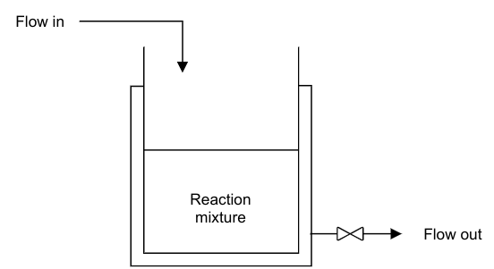
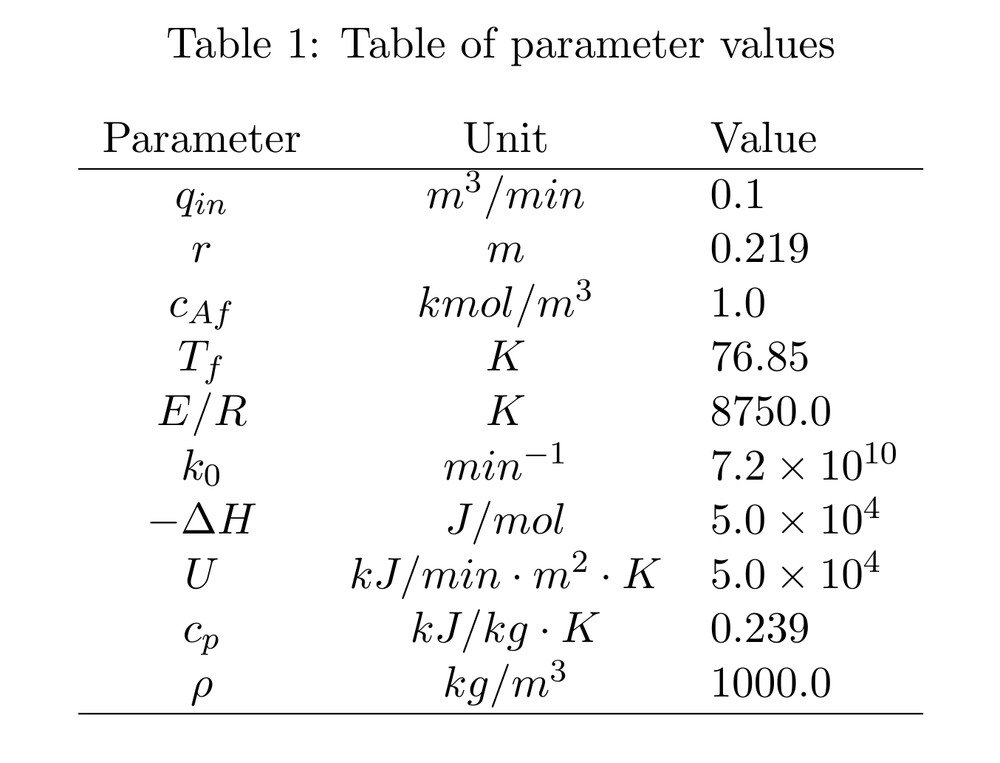

ReactorEnv
We define the reactor as a Continuous Stirred Tank Reactor (CSTR) Process Model, which provides the necessary conditions for a reaction to take place. Because it is a continuous process, reactants and products are continuously fed and withdrawn from the reactor respectively.
In this example, a single first order irreversible exothermic reaction of the form A → B takes place. Since the reaction is exothermic, thermal energy is removed from the reactor through a cooling jacket.
The following assumptions are taken in deriving the model:
The reaction mixture is well mixed. This implies that there are no spatial variations in the reaction mixture.
Negligible or no heat losses to the surroundings.
Performing a component balance on reactant A, the following ordinary differential equation is obtained
where \(c_A\) is the concentration of reactant A in \(kmol/m^3\), \(t\) is the time in \(min\), \(q_{in}\) is the volumetric flow rate of the inlet stream in \(m^3/min\), \(r\) is the radius of the reactor in \(m\), \(h\) is the level of reaction mixture in the reactor in \(m\), \(c_{Af}\) is the concentration of reactant A in the feed stream in \(kmol/m^3\), \(k_0\) is the pre-exponential factor in \(min^{-1}\), \(E/R\) is the ratio of reaction activation energy to the universal gas constant in \(K\) and \(T\) is the reaction mixture temperature in \(K\).
Similarly, an energy balance can be conducted to obtain the following energy balance equation
where \(T_f\) is the temperature of the feed stream in \(K\), \(\Delta H\) is the heat of reaction in \(kJ/kmol\), \(\rho\) is the density of the reaction mixture in \(kg/m^3\), \(c_p\) is the specific heat capacity of the reaction mixture in \(kJ/kg \cdot K\), \(U\) is the heat transfer coefficient in \(kJ/min \cdot m^2 \cdot K\) and \(T_c\) is the coolant temperature.
Finally, deriving an overall material balance around the reactor leads to the following equation
where \(q_{out}\) is the volumetric flow rate of the contents out of the reactor in \(m^3/min\).
A summary of parameters values used in this project is presented in Table
{kind=link}
In the CSTR process model described above, \(c_A\), \(T\), and \(h\) are the state variables. The controlled variables are \(c_A\) and \(h\) while the manipulated variables are \(q_{out}\) and \(T_c\).
ReactorEnv module
Following the discription above, we provide APIs as below:
ReactorEnv simulates a general reactor environment. This is supposed to be an template environment. The documentations in that file is enhanced and provided comment lines (# —- standard —- and # /—- standard —-) enclose pieces of code that should be reused by most of smpl environments. Please consult the smplEnvBase class.
- class smpl.envs.reactorenv.ReactorEnvGym(dense_reward=True, normalize=True, debug_mode=False, action_dim=2, observation_dim=3, reward_function=None, done_calculator=None, max_observations=[1.0, 100.0, 1.0], min_observations=[1e-08, 1e-08, 1e-08], max_actions=[35.0, 0.2], min_actions=[15.0, 0.05], error_reward=-1000.0, initial_state_deviation_ratio=0.3, compute_diffs_on_reward=False, np_dtype=<class 'numpy.float32'>, sampling_time=0.1, max_steps=100)[source]
Bases:
smpl.envs.utils.smplEnvBase- evaluate_observation(observation)[source]
observation: numpy array of shape (self.observation_dim) returns: observation evaluation (reward in a sense)
- evaluate_rewards_mean_std_over_episodes(algorithms, num_episodes=1, error_reward=None, initial_states=None, to_plt=True, plot_dir='./plt_results', computer_on_episodes=False)[source]
returns: mean and std of rewards over all episodes. since the rewards_list is not aligned (e.g. some trajectories are shorter than the others), so we cannot directly convert it to numpy array. we have to convert and unwrap the nested list. if computer_on_episodes, we first average the rewards_list over episodes, then compute the mean and std. else, we directly compute the mean and std for each step.
- evalute_algorithms(algorithms, num_episodes=1, error_reward=None, initial_states=None, to_plt=True, plot_dir='./plt_results')[source]
when excecuting evalute_algorithms, the self.normalize should be False. algorithms: list of (algorithm, algorithm_name, normalize). algorithm has to have a method predict(observation) -> action: np.ndarray. num_episodes: number of episodes to run error_reward: overwrite self.error_reward initial_states: None, location of numpy file of initial states or a (numpy) list of initial states to_plt: whether generates plot or not plot_dir: None or directory to save plots returns: list of average_rewards over each episode and num of episodes
- evenly_spread_initial_states(val_per_state, dump_location=None)[source]
Evenly spread initial states. This function is needed only if the environment has steady_observations.
- Parameters
val_per_state (int) – how many values to sampler per state.
Returns: [initial_states]: evenly spread initial_states.
- find_outperformances(algorithms, rewards_list, initial_states, threshold=0.05, top_k=10)[source]
this function computes the outperformances of the last algorithm in algorithms. there are three criteria: if in a trajectory, the algorithm has reward >= all other algorithms, the corresponding initial_state is stored to always_better. if in a trajectory, the algorithm’s mean reward >= threshold + all other algorithms’ mean reward, the corresponding initial_state is stored to averagely_better. for the top_k most outperformed reward mean, the corresponding initial_state is stored to top_k_better, in ascending order.
- find_outperformances_compute_always_better(rewards)[source]
- find_outperformances_compute_average_outperformances(rewards)[source]
- generate_dataset_with_algorithm(algorithm, normalize=None, num_episodes=1, error_reward=- 1000.0, initial_states=None, format='d4rl')[source]
this function aims to create a dataset for offline reinforcement learning, in either d4rl or pytorch format. the trajectories are generated by the algorithm, which interacts with this env initialized by initial_states. algorithm: an instance that has a method predict(observation) -> action: np.ndarray. if format == ‘d4rl’, returns a dictionary in d4rl format. else if format == ‘torch’, returns an object of type torch.utils.data.Dataset.
- reset(initial_state=None, normalize=None)[source]
required by gym. This function resets the environment and returns an initial observation.
- reward_function_standard(previous_observation, action, current_observation, reward=None)[source]
the s, a, r, s, a calculation.
- Parameters
previous_observation ([np.ndarray]) – This is denormalized observation, as usual.
action ([np.ndarray]) – This is denormalized action, as usual.
current_observation ([np.ndarray]) – This is denormalized observation, as usual.
reward ([float]) – If reward is provided, directly return the reward.
- Returns
reward.
- Return type
[float]
- sample_initial_state()[source]
- step(action, normalize=None)[source]
required by gym. This function performs one step within the environment and returns the observation, the reward, whether the episode is finished and debug information, if any.
- class smpl.envs.reactorenv.ReactorMLPReinforceAgent(obs_dim=3, act_dim=2, hidden_size=6, device='cpu')[source]
Bases:
torch.nn.modules.module.Modulea simple torch-MLP based rl agent,.
- Returns
Can either return a sampled action or the distribution the action sampled from.
- Return type
[type]
- forward(obs, return_distribution=True)[source]
Defines the computation performed at every call.
Should be overridden by all subclasses.
Note
Although the recipe for forward pass needs to be defined within this function, one should call the
Moduleinstance afterwards instead of this since the former takes care of running the registered hooks while the latter silently ignores them.
- training: bool
- class smpl.envs.reactorenv.ReactorMPC(Nt=20, dt=0.1, Q=array([[0.1, 0., 0.], [0., 0.1, 0.], [0., 0., 0.1]]), R=array([[0., 0.], [0., 0.]]), P=array([[0.1, 0., 0.], [0., 0.1, 0.], [0., 0., 0.1]]))[source]
Bases:
objecta simple MPC controller.
- Returns
action.
- Return type
[type]
- Pffunc(x)[source]
- build_controller()[source]
- lfunc(x, u)[source]
- predict(x)[source]
- class smpl.envs.reactorenv.ReactorModel(sampling_time)[source]
Bases:
object- ode(x, u)[source]
- step(x, u)[source]
- class smpl.envs.reactorenv.ReactorPID(Kis, steady_state=[0.8778252, 0.659], steady_action=[26.85, 0.1], min_action=[15.0, 0.05], max_action=[35.0, 0.2])[source]
Bases:
objecta simple proportional controller that utilizes the config of this environment.
- Returns
action.
- Return type
[type]
- predict(state)[source]